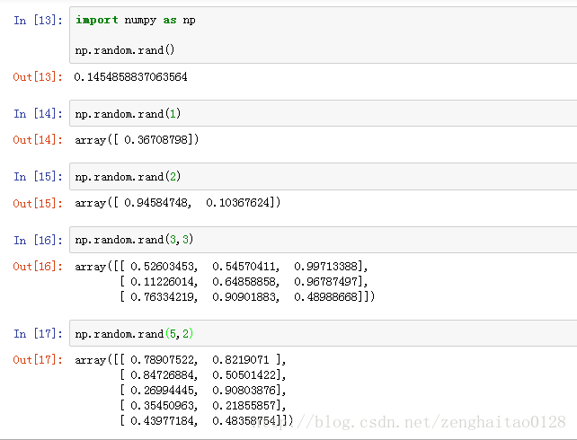

摘要
本节主要是学习numpy的函数调用，主要是基础的学习路线，包括简单的实例笔记等。
- 摘要
- [np.random.rand()函数](#nprandomrand函数) - [语法：](#语法) - [np.random.randn()函数](#nprandomrandn函数) - [语法：](#语法-1) - [np.random.randint()函数](#nprandomrandint函数) - [语法：](#语法-2)
- [x] Edit By Porter, 积水成渊,蛟龙生焉。
np.random.rand()函数
语法：
- np.random.rand(d0,d1,d2……dn)
注：使用方法与np.random.randn()函数相同
- 返回值：
通过本函数可以返回一个或一组服从“0~1”均匀分布的随机样本值。随机样本取值范围是[0,1)，不包括1。

np.random.randn()函数
语法：
- np.random.randn(d0,d1,d2……dn)
1) 当函数括号内没有参数时，则返回一个浮点数；
2) 当函数括号内有一个参数时，则返回秩为1的数组，不能表示向量和矩阵；
3) 当函数括号内有两个及以上参数时，则返回对应维度的数组，能表示向量或矩阵；
4) np.random.standard_normal（）函数与np.random.randn()类似，但是np.random.standard_normal（） 的输入参数为元组（tuple）.
5) np.random.randn()的输入通常为整数，但是如果为浮点数，则会自动直接截断转换为整数。
- 返回值：
通过本函数可以返回一个或一组服从标准正态分布的随机样本值。
- 特点：
标准正态分布是以0为均值、以1为标准差的正态分布，记为N($\mu, \sigma$)～（0，1）。对应的正态分布曲线如下所示，即

更为具体的示意图如下
代码输出效果如下

np.random.randint()函数
语法：
numpy.random.randint(low, high=None, size=None, dtype=’l’)
输入：
low—–为最小值
high—-为最大值
size—–为数组维度大小
dtype—为数据类型，默认的数据类型是np.int。
- 返回值：
返回随机整数或整型数组，范围区间为[low,high），包含low，不包含high；
high没有填写时，默认生成随机数的范围是[0，low）

np堆叠数组
- stack()，hstack()，vstack()函数
numpy.vstack(tup)
语法：
np.vstack((a,b))
- Parameters:
tup : sequence of ndarrays
The arrays must have the same shape along all but the first axis. 1-D arrays must have the same length.
- Returns:
stacked : ndarray
The array formed by stacking the given arrays, will be at least 2-D.
>>> a = np.array([[1], [2], [3]])
>>> b = np.array([[2], [3], [4]])
>>> np.vstack((a,b))
array([[1],
[2],
[3],
[2],
[3],
[4]])